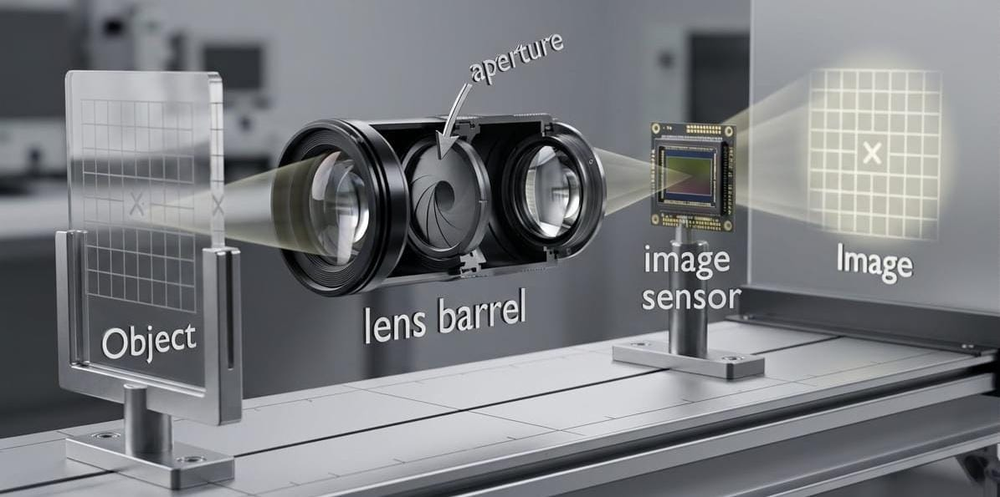

How a Camera Works
The Components
A camera is a chain of precisely positioned elements that turn light from the real world into a recorded image. The diagram below shows each stage in order.

Image generated using Google Gemini AI.
Object — the scene or subject reflecting light toward the camera.
Front Lens — gathers incoming light and begins bending (refracting) it toward a focal point.
Aperture — a variable opening inside the lens barrel that controls how much light passes through.
Rear Lens — further focuses the converging light so it forms a sharp image on the sensor plane.
Image Sensor — a grid of millions of photosites (pixels) that convert photons into electrical signals.
Image — the final digital photograph reconstructed from those electrical signals.
The Aperture and Diffraction
Because the aperture is a finite opening, light diffracts as it passes through it. As a result, a single point of light in the scene does not form an infinitely small point on the sensor. Instead, it produces a characteristic intensity distribution called the Point Spread Function (PSF).
For a detailed look at what the PSF is, how the Airy disk forms, and why it matters for every imaging system, see the Point Spread Function post.
References
- Virtual Cameras – Khan Academy / Pixar in a Box – an interactive course on how virtual cameras model real camera optics.
- How Digital Cameras Work – HowStuffWorks – a thorough walkthrough of every component inside a digital camera.